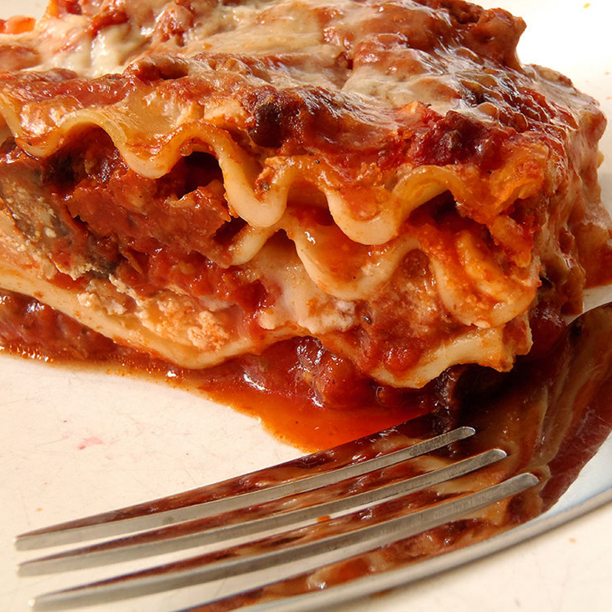

Lasagna

This is my mom's special homemade lasagna recipe with a meaty,
made-from-scratch tomato sauce and a deliciously cheesy filling.
A more traditional homemade lasagna filling would be made with
ricotta but my mom's recipe calls for a blend of small-curd cottage
cheese and Parmesan. I have found none better anywhere. Serve with a
leafy green salad and crusty garlic bread.
- 1/2 pound ground pork
- 1/2 pound lean ground beef
- 1/2 cup minced onion
- 1 (28 ounce) can crushed tomatoes
- 1 (8oz) can tomato sauce
- 2 tablespoons fresh parsley
- 1 clove garlic
- 1 1/2 teaspoons basil
- 1 1/2 teaspoons salt
- 1/2 teaspoon dried oregano
- 1/8 teaspoon sugar
- 1 (16oz) lasagna noodles
- 1 pound cottage cheese
- 3/4 cup parmesan
- 3 large eggs
- 2 teaspoons salt
- 1/4 teaspoon black pepper
- 1 (16oz) pack grated mozzarella